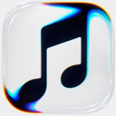

个人后台 尚未安装
运行在你自己的 Cloudflare 账户，替你接续每次聆听。
一次安装，默认暂停，由你决定何时开始。
余音音乐记录完成连接后，新的聆听记录会出现在这里。
欢迎使用余音
完成这三个连接，让 Apple Music 的聆听自动记录到 Last.fm。
运行在你自己的 Cloudflare 账户，替你接续每次聆听。
一次安装，默认暂停，由你决定何时开始。从已登录的 Apple Music 网页连接你的音乐账户。
只在你点击连接时读取所需的授权信息。让最近播放的音乐，在你的 Last.fm 资料中留下记录。
配置应用并授权后，即可开始记录。暂停期间的播放不会在恢复时补交。
按你的习惯
一些偏好，让余音更像你的。
选择阅读聆听记录时的光线。
外观偏好仅保存在当前浏览器。
连接信息保存在当前浏览器，请妥善备份管理钥匙。
Apple Music → Last.fm · 让每次聆听有回响